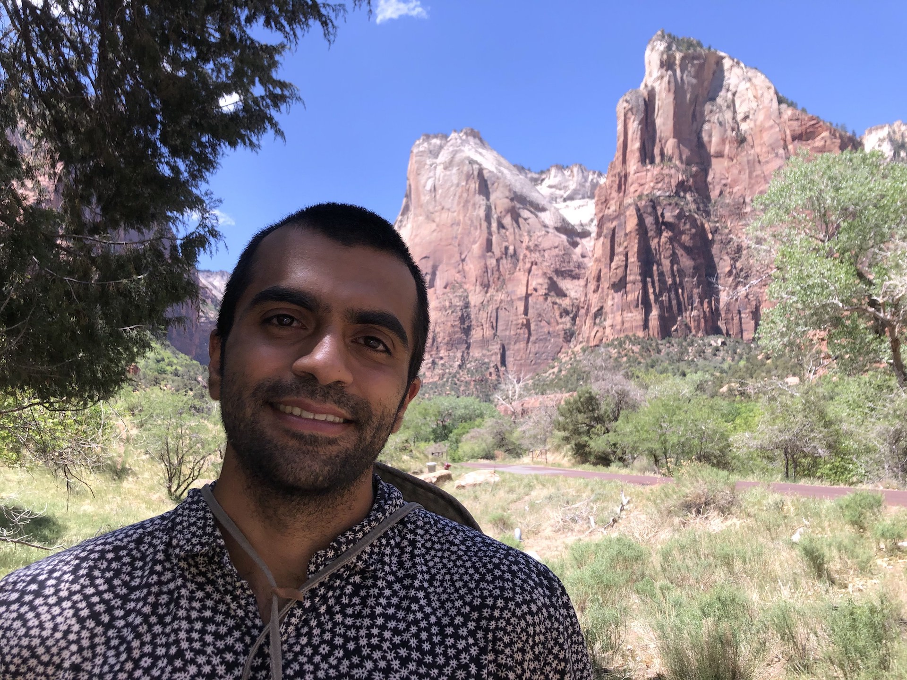

Honda Research Institute
February 2022 - March 2023
Researching computer vision and deep learning for self driving car applications. Specifically working on trajectory prediction and birds-eye view segmentation.

Broadly interested in Cognitive and Computational Neuroscience. Specifically, learning and decision making.
I received both my bachelors and masters degrees in electrical engineering from the University of Southern California. During my time there, I was fortunate enough to be able to work with many different researchers on a variety of projects ranging from vehicle to vehicle communication, neuroimaging, and wildlife classification. Apparently, I couldn't have enough of LA or USC because I am now pursuing my PhD in Psychology (Brain and Cognitive Sciences) under Professor Payam Piray.
My professional/academic interests lie in researching the human brain. Specifically, I am interested in how humans learn and reason with sparse, ambigious, and noisy data, how we make decisions in an uncertain world, and how we learn from our mistakes. I tackle these problems using tools from Bayesian machine learning and reinforcement learning to develop formal models of these processes in the brain. We then validate these models using a combination of behavioral, neuroimaging, and computational techniques.
My personal interests include hiking, running, skateboarding, backpacking, coffee (typical LA coffee snob), history, and literature. Basically, when I'm not doing research or spending time with my dog, I try to be outdoors.
Over the past few years I've had the great pleasure of woking with some amazing and intelligent people.
February 2022 - March 2023
Researching computer vision and deep learning for self driving car applications. Specifically working on trajectory prediction and birds-eye view segmentation.
February 2021 - June 2021
Unsupervised classification of animals in the wild from camera trap images.
September 2019 - July 2021
Artficial brain aging using GAN's and white matter hyperintensity segmentation in fMRI photos.

May 2019 - September 2019
Using machine learning to estimate vehicular communication ranges.
Yi Xu, Armin Bazarjani, Hyung-gun Chi, Chiho Choi, Yun Fu "Uncovering the Missing Pattern: Unified Framework Towards Trajectory Imputation and Prediction" CVPR 2023